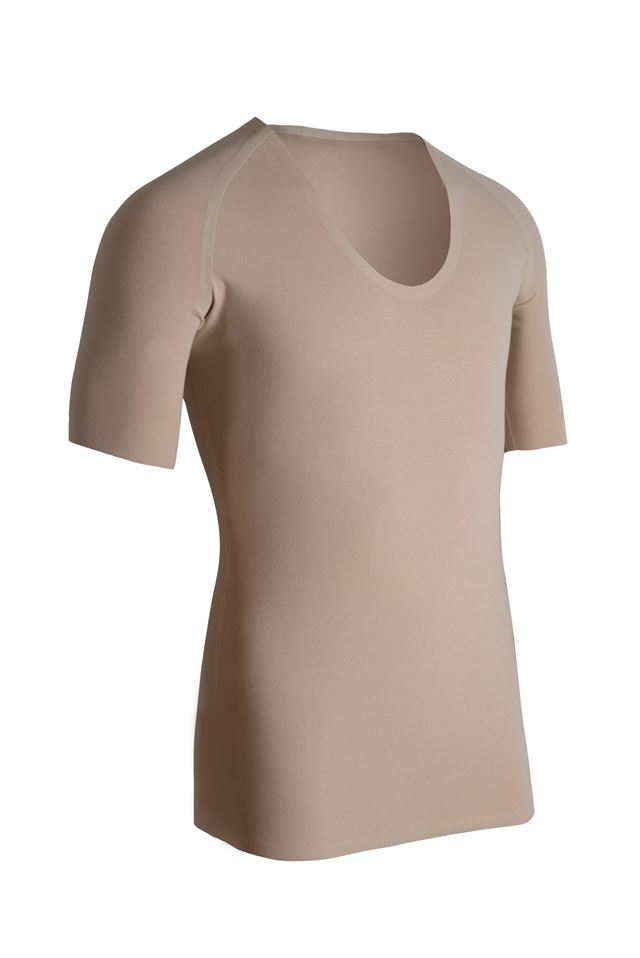
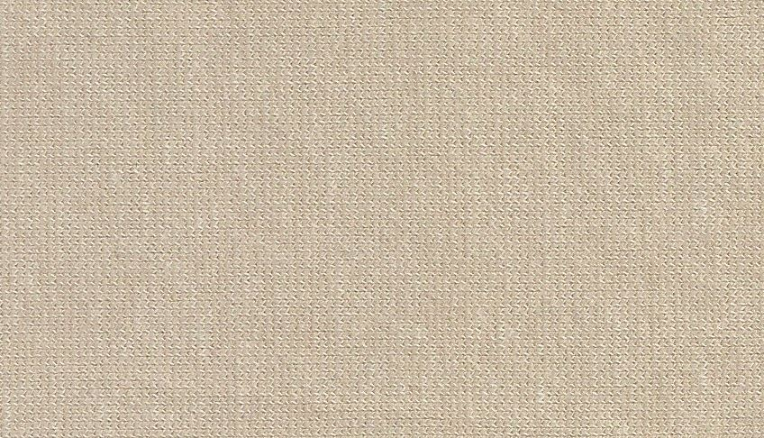

X


We believe in the law of the vital few, the Paretoʼs 80-20 rule, where roughly 80 percent of the effects come from 20% of the causes. We look at the clothes we own: only about 20 percent of our wardrobe is active, the rest is not in use. Our wardrobe is filled with items we do not need. Our culture of consumption leads us to increasingly buy cheaper products of inferior quality.
We do not want to be a part of the excessiveness. We want to curb impulsive buying and promote the idea of enjoying more with less.
This is the reason for starting KIIN: to be a responsible producer who creates beautiful and stylish garments that are functional and comfortable. We expect you to wear our garments most of the time. We invest into making things using traditional values of care, quality and the intention to last. Each piece is a staple item created with form and function in mind that is easy to care for and convenient for travel. The outstanding performance of each garment will accompany you through your journey of life.